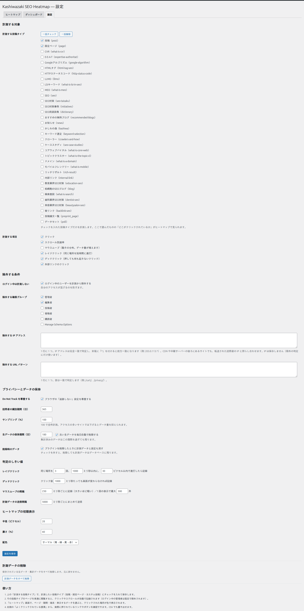
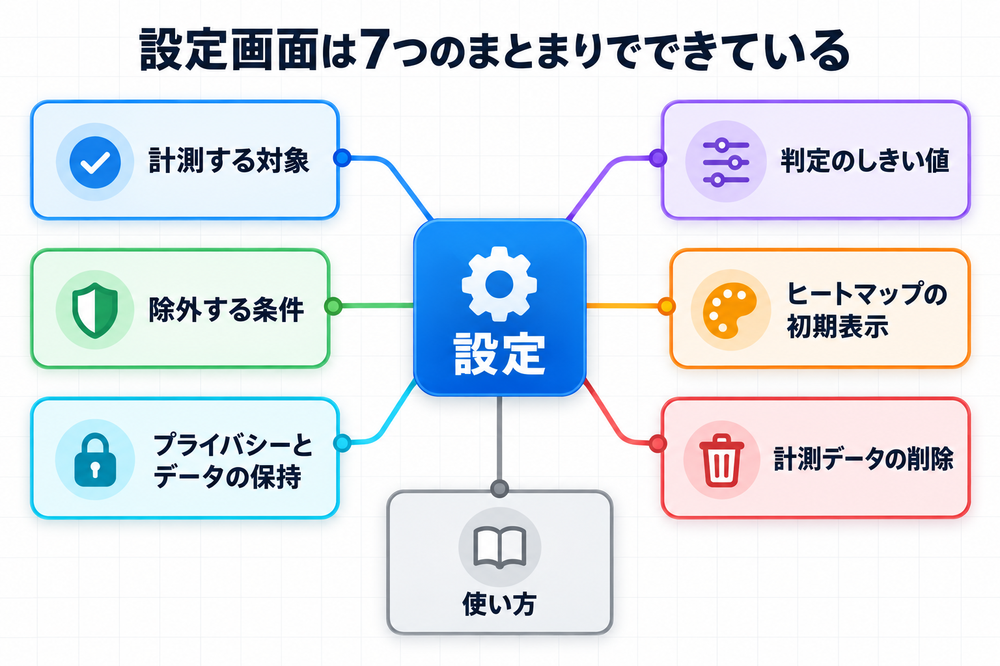
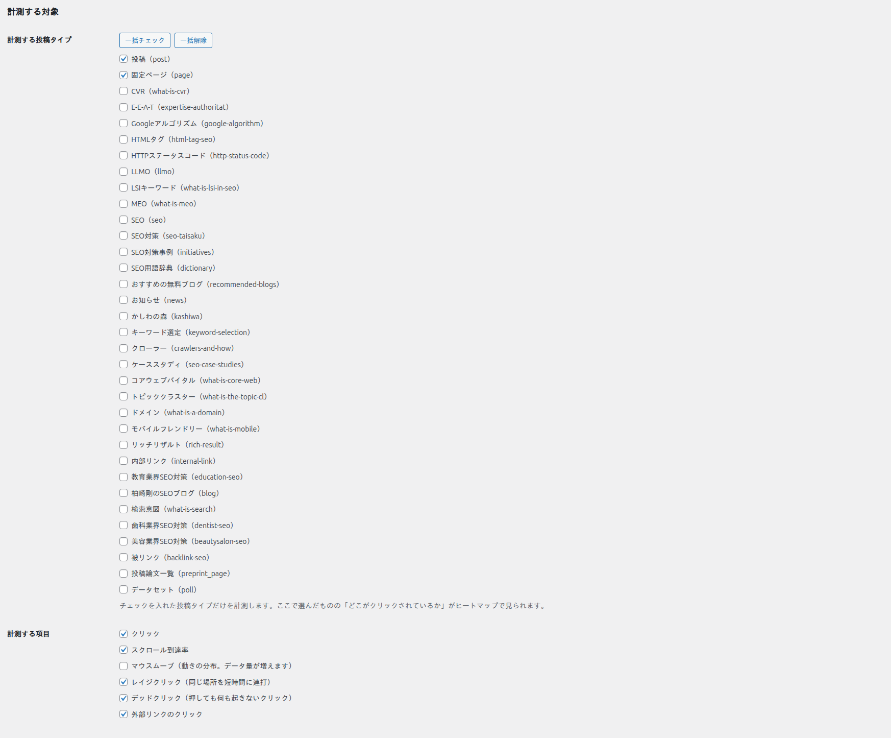
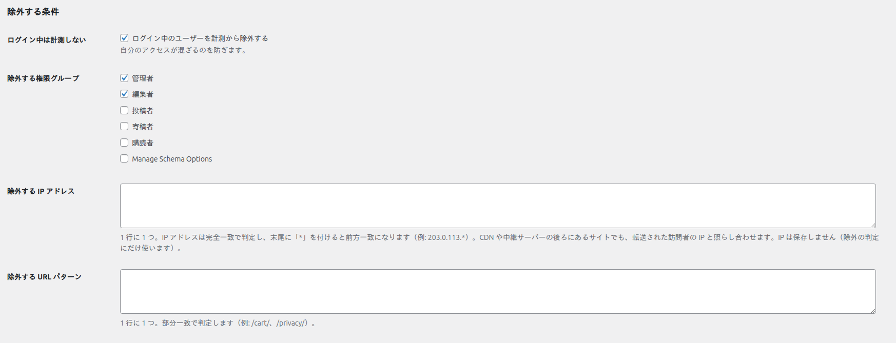
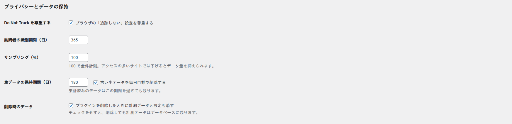
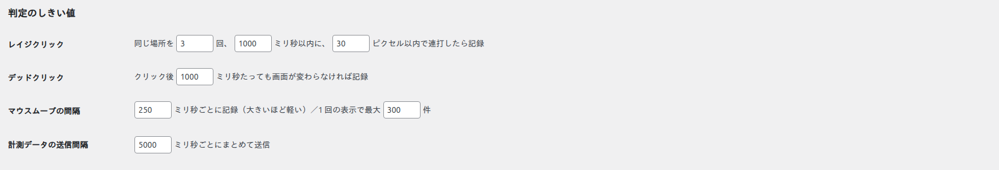
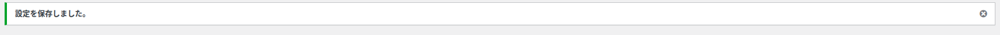
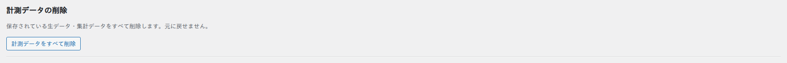
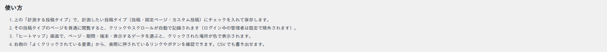

設定画面
計測する対象や除外の条件、データの保持などを設定します。計測を始めるための最初の設定もこの画面で行います。
設定画面は 7 つのまとまりでできています。上から順に「計測する対象」「除外する条件」「プライバシーとデータの保持」「判定のしきい値」「ヒートマップの初期表示」「計測データの削除」「使い方」です。変更したら、ページ下部の「設定を保存」を押すと反映されます。


計測する対象

計測する投稿タイプ
何をするものか: どの種類のページを計測するかを選びます。ここにチェックを入れた投稿タイプのページだけが、「どこがクリックされているか」の計測対象になります。
説明: 画面には「チェックを入れた投稿タイプだけを計測します。ここで選んだものの「どこがクリックされているか」がヒートマップで見られます。」と表示されます。
既定値: 「投稿」と「固定ページ」にチェックが入っています。そのほか、サイトで使っているカスタム投稿の種類も一覧に並びます。
選択肢と結果: チェックを入れた種類のページだけが計測されます。チェックを外した種類のページは、閲覧されてもデータは記録されません。
一括チェック・一括解除: 「計測する投稿タイプ」の下に「一括チェック」と「一括解除」の 2 つのボタンがあります。「一括チェック」を押すと一覧のすべての投稿タイプにチェックが入り、「一括解除」を押すとすべてのチェックが外れます。投稿タイプが多くて 1 つずつ選ぶのが大変なときに使います。どちらのボタンもその場でチェックの状態を変えるだけで、「設定を保存」を押すまでは保存されません。
ここに何もチェックが入っていないと計測が始まりません。ダッシュボード画面にも警告が表示されます。
計測する項目
何をするものか: 記録する行動の種類を選びます。
既定値: 「クリック」「スクロール到達率」「レイジクリック」「デッドクリック」「外部リンクのクリック」にチェックが入り、「マウスムーブ」は外れています。
| 項目 | 記録される内容 |
|---|---|
| クリック | ページ内のクリックを記録します。 |
| スクロール到達率 | どこまでスクロールされたかを記録します。 |
| マウスムーブ | マウスの動きの分布を記録します。動きが多いため、記録されるデータ量が増えます。はじめは外れています。 |
| レイジクリック | 同じ場所を短時間に連打したことを記録します。 |
| デッドクリック | 押しても何も起きないクリックを記録します。 |
| 外部リンクのクリック | 外部サイトへのリンクのクリックを記録します。 |
「マウスムーブ」をオンにすると、ヒートマップ画面の「表示するデータ」でマウスの動きの分布を選べるようになります。ただしデータ量が増えるため、必要なときだけオンにするのがおすすめです。
除外する条件

ログイン中は計測しない
何をするものか: ログインしている状態でページを見たとき、そのアクセスを計測から外します。チェックボックスには「ログイン中のユーザーを計測から除外する」と表示され、その下に「自分のアクセスが混ざるのを防ぎます。」と書かれています。既定値はオンです。
自分でサイトを確認することが多い場合、この設定をオンにしておくと、自分のクリックが集計に混ざりません。はじめからオンになっています。
補足: オンのときは、ログインしている間だけ、記録しない人であることを示す Cookie を使います（ログアウトすると消えます）。ログインする前に作られて、まだ届いていない記録も、ログインの後は計測に含めません。
除外する権限グループ
何をするものか: どの役割のユーザーのアクセスを除外するかを選びます。サイトで使っている権限グループ（管理者・編集者など）が一覧に並びます。既定値は「管理者」と「編集者」です。
除外する IP アドレス
何をするものか: 特定の IP アドレスからのアクセスを計測から外します。1 行に 1 つずつ入力します。完全一致のほか、末尾に「*」を付けると前方一致で指定できます。はじめは空欄です。
注意点: 入力した IP アドレスは除外の判定にだけ使われ、データベースには保存されません。CDN や中継サーバーの後ろにあるサイトでも、転送された訪問者の IP と照らし合わせます。
除外する URL パターン
何をするものか: 特定の URL を含むページを計測から外します。1 行に 1 つずつ入力し、URL の一部が一致すると除外されます。はじめは空欄です。
お問い合わせの完了ページや、特定のキャンペーンページなど、計測したくないページがあるときに使います。
プライバシーとデータの保持

ブラウザの「追跡しない」設定を尊重する
何をするものか: 訪問者のブラウザで「追跡しない（Do Not Track）」が有効なとき、その訪問者を計測しません。既定値はオンです。
訪問者の識別期間（日）
何をするものか: 同じ訪問者を見分けるための期間を日数で指定します。既定値は 365 日で、入力できる範囲は 1〜3650 日です。
サンプリング（%）
何をするものか: 訪問者のうち何 % を計測するかを指定します。既定値は 100 で、入力できる範囲は 1〜100 です。画面には「100 で全件計測。アクセスの多いサイトでは下げるとデータ量を抑えられます。」と表示されます。
アクセスが非常に多いサイトでは、サンプリングを 10〜20 などに下げると、データ量と保存の負担を抑えながら傾向をつかめます。小規模なサイトでは 100 のままがおすすめです。
生データの保持期間（日）
何をするものか: 個々の操作を記録した詳しいデータ（生データ）を、何日間保存するかを指定します。既定値は 180 日で、入力できる範囲は 1〜3650 日です。
古い生データを毎日自動で削除する
何をするものか: 保持期間を過ぎた生データを毎日自動で削除します。既定値はオンです。画面には「集計済みのデータはこの期間を過ぎても残ります。」と表示されます。つまり、古い詳しい記録は消えても、集計された数値は残ります。
プラグインを削除したときに計測データと設定も消す
何をするものか: プラグインを削除（アンインストール）したときに、計測データと設定も一緒に消すかどうかを選びます。既定値はオンです。画面には「チェックを外すと、削除しても計測データはデータベースに残ります。」と表示されます。
この設定をオンにしたままプラグインを削除すると、計測データと設定は消えて元に戻せません。あとでまた使う予定がある場合は、チェックを外しておくとデータが残ります。
判定のしきい値

レイジクリック
何をするものか: どのくらいの連打を「レイジクリック」とみなすかの条件を指定します。画面には「同じ場所を [3] 回、[1000] ミリ秒以内に、[30] ピクセル以内で連打したら記録」と表示されます。
既定値: 3 回 / 1000 ミリ秒 / 30 ピクセル
入力できる範囲: 回数は 2〜20、時間は 100〜10000 ミリ秒、範囲は 5〜200 ピクセルです。
デッドクリック
何をするものか: どのくらい反応が無ければ「デッドクリック」とみなすかを指定します。画面には「クリック後 [1000] ミリ秒たっても画面が変わらなければ記録」と表示されます。
既定値: 1000 ミリ秒。入力できる範囲は 200〜10000 ミリ秒です。
マウスムーブの間隔
何をするものか: マウスの動きを記録する細かさを指定します。画面には「[250] ミリ秒ごとに記録（大きいほど軽い）／1 回の表示で最大 [300] 件」と表示されます。
既定値: 250 ミリ秒 / 300 件。入力できる範囲は間隔が 50〜2000 ミリ秒、最大件数が 10〜2000 件です。
計測データの送信間隔
何をするものか: 記録した操作をどれくらいの間隔でまとめて送信するかを指定します。画面には「[5000] ミリ秒ごとにまとめて送信」と表示されます。
既定値: 5000 ミリ秒。入力できる範囲は 1000〜60000 ミリ秒です。
しきい値は、はじめの設定のままで問題なく使えます。サイトの性質に合わせて調整したい場合だけ変更してください。数字を小さくすると記録が細かくなり、データ量が増えます。
ヒートマップの初期表示
ヒートマップ画面を開いたときの、はじめの見え方を決めます。ここで設定した値は、ヒートマップ画面のツールバーで一時的に変えることもできます。
| 項目 | 内容 | 既定値 |
|---|---|---|
| 半径（ピクセル） | 色のにじむ範囲の大きさを指定します。範囲は 5〜120 です。 | 28 |
| 濃さ（%） | 色の濃さを指定します。範囲は 5〜100 です。 | 60 |
| 配色 | 色の組み合わせを選びます。選べるのは「サーマル（青→緑→黄→赤）」「ホット」「クール」「Viridis」「モノクロ」です。 | サーマル（青→緑→黄→赤） |
設定を保存
変更した内容を反映するには、ページ下部の「設定を保存」ボタンを押します。保存すると「設定を保存しました。」と表示されます。

各項目を変更しても、「設定を保存」を押すまでは反映されません。変更したら必ず保存してください。
変更して保存しないまま、見出しの下のタブ（ヒートマップ・ダッシュボード・設定）を押すと、「保存していない変更があります。このまま移動しますか？」と確かめる案内が出ます。「キャンセル」を押すと設定画面に残ります。左メニューから移動したときは、この案内は出ません。
計測データの削除

何をするものか: 保存されている生データと集計データを、すべて削除します。画面には「保存されている生データ・集計データをすべて削除します。元に戻せません。」と表示されます。
操作手順: 「計測データをすべて削除」ボタンを押すと、確認のダイアログが表示されます。内容を確認して実行すると削除され、「計測データをすべて削除しました。」と表示されます。
確認ダイアログの文言: 「計測データをすべて削除します。よろしいですか？ この操作は元に戻せません。」
この操作は元に戻せません。削除すると、それまでのクリックやスクロールのデータはすべて無くなります。実行する前に、本当に必要かどうかを確認してください。
使い方

設定画面のいちばん下には「使い方」として、はじめにやることが手順でまとめられています。はじめて使うときは、ここに書かれたとおりに進めると、データが表示されるまでたどり着けます。
設定で迷ったときは、まずこの「使い方」を確認してください。計測の開始からデータの確認までの流れが順番に説明されています。